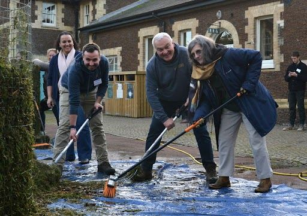
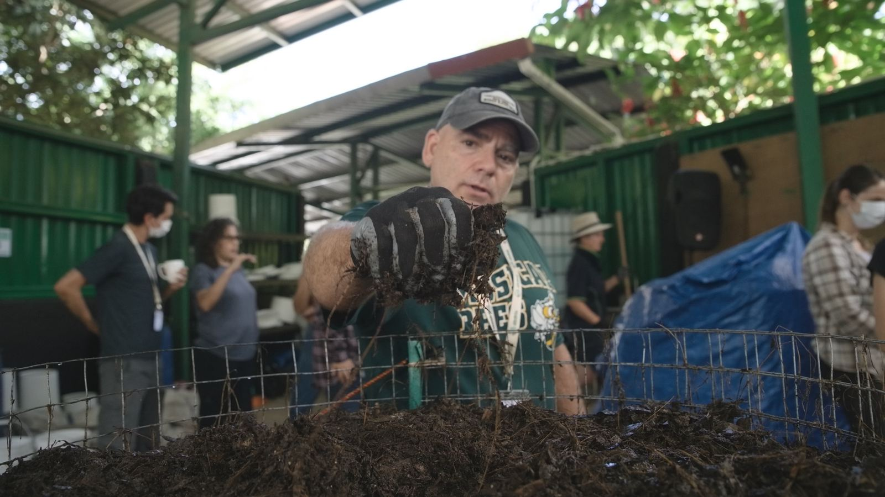
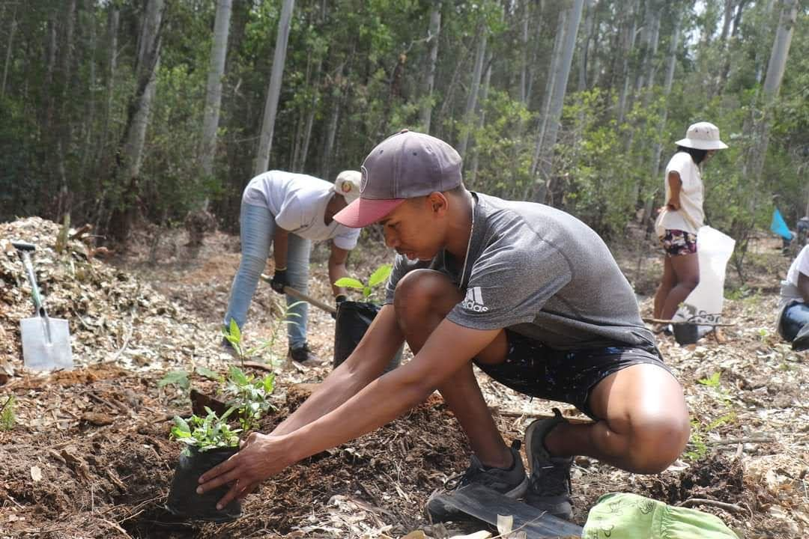
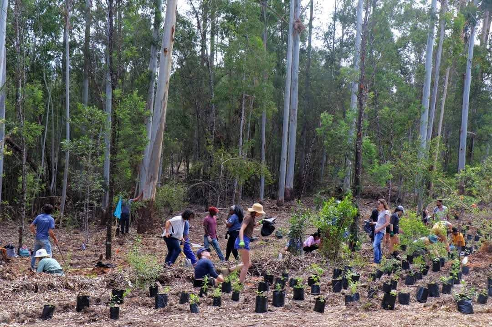
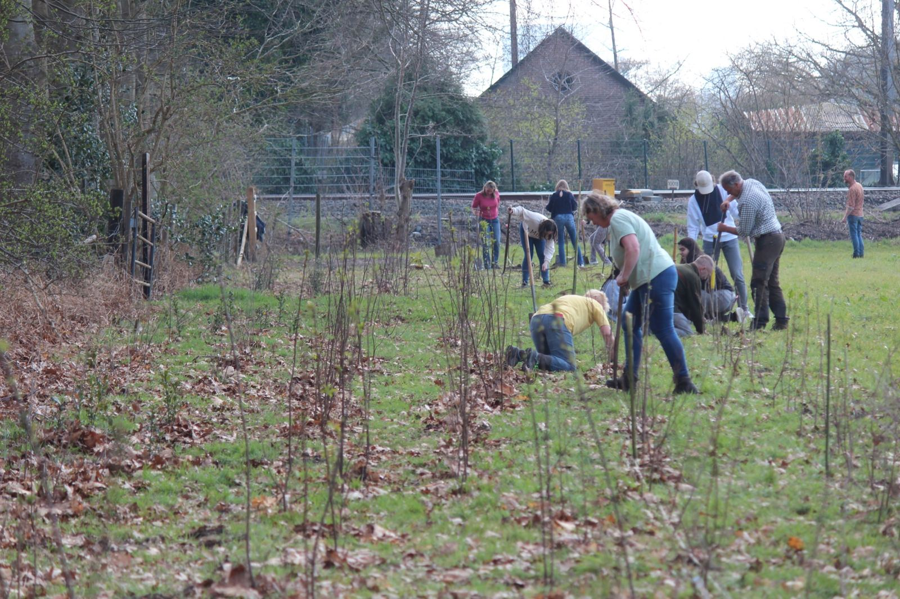
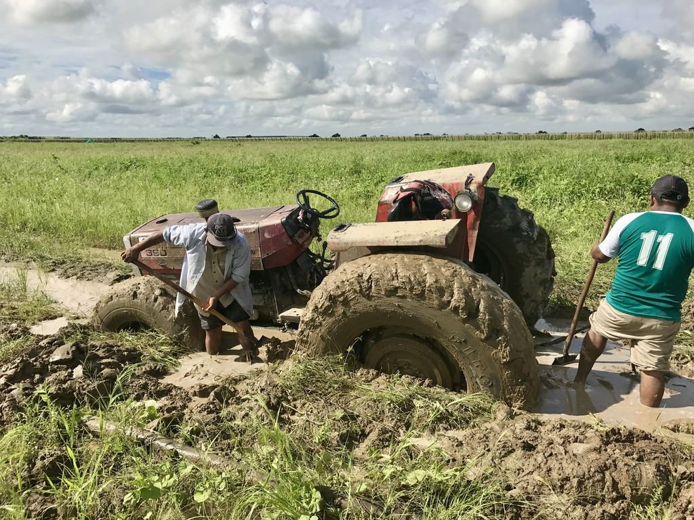
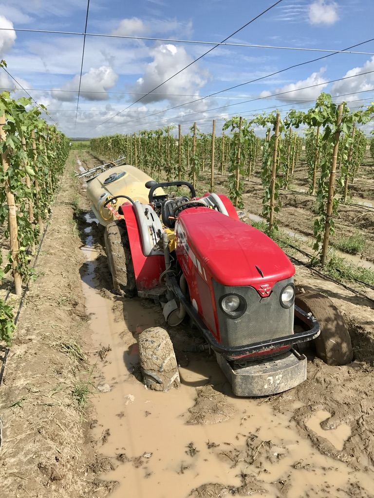

COMMUNITY MAP
Where this movement lives
Every point is a person, a hub, a workshop, or a documented case-study site.
-

REPLACE_WITH_CAPTION -

REPLACE_WITH_CAPTION -

REPLACE_WITH_CAPTION -

REPLACE_WITH_CAPTION -

REPLACE_WITH_CAPTION -

REPLACE_WITH_CAPTION -

REPLACE_WITH_CAPTION -

REPLACE_WITH_CAPTION -

REPLACE_WITH_CAPTION
Interactive map embed. Opt-in member locations at city/region level only, never exact addresses. Legend: green = members & professionals, gold = hubs & workshop sites. Data: alumni opt-in + events system.
FIND A PROFESSIONAL
Hire an earned title, not a claim
Everyone listed here has earned their title through our programs: Soil Food Web Consultants have completed the full Complete Practicum, all four Advanced Programs, and Soil Food Web Lab-Techs have completed the Microscopy Advanced Program. Search by region or specialty to find the right person for your land or lab.
Directory entries are maintained by the Foundation; titles are verified against program records. Are you a graduate who should be listed? Update your profile →
The directory prototype's dataset is fictional (src/lib/data.ts declares it). Real practitioner records required before this ships.
Put yourself on this map
Every Soil Regenerator started with one course, one webinar, or one afternoon with a microscope. Your dot is waiting.